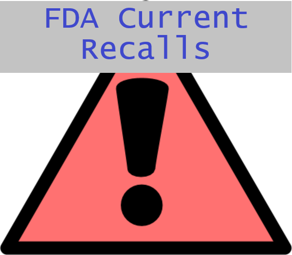

DISCLAIMER: This site allows a historical search of the FDA Adverse events for reported drug interactions.
Per FDA: "Do not rely on openFDA to make decisions regarding medical care. While we make every effort to ensure that data is accurate, you should assume all results are unvalidated."
For information on current FDA recalls, please click here. For information on filing a recall, please click here.
